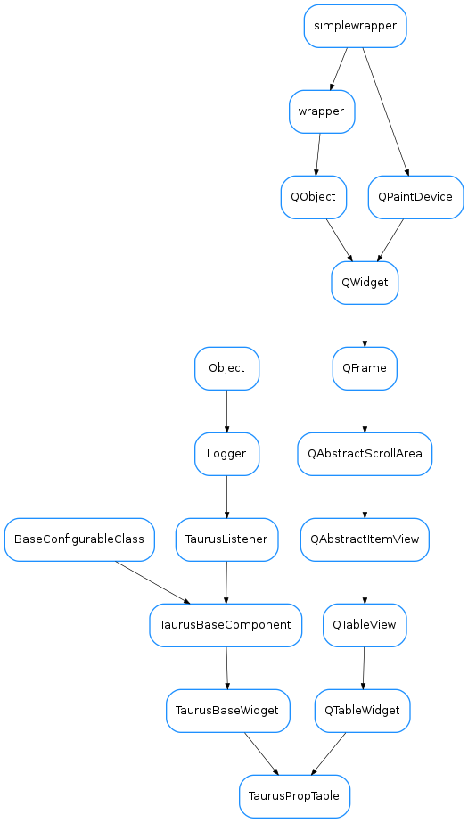

TaurusPropTable¶

-
class
TaurusPropTable(parent=None, designMode=False)[source]¶ Bases:
PyQt4.QtGui.QTableWidget,taurus.qt.qtgui.base.taurusbase.TaurusBaseWidgetThis widget will show a list of properties of device and the list of values. @todo add a frame for Add, Delete and Refresh buttons!
-
contextMenuEvent(event)[source]¶ This function is called when right clicking on qwt plot area. A pop up menu will be shown with the available options.
-
setPropertyValue(value, i, j)[source]¶ This method inserts a new table widget inside the cell @deprecated ... use setText() and editProperty() event call instead!!!
-
setTable(dev_name)[source]¶ Fills the table with the names of properties and their values for the given device.
-